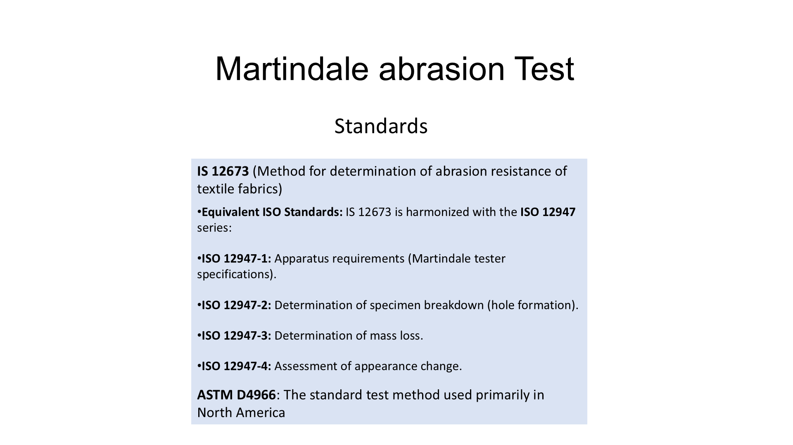

To determine the abrasion resistance of textile fabrics / leather specimens using the Martindale Abrasion Test.
ISO 12947 ASTM D4966 EN ISO 12947
Leather / textile fabric specimens, abradant wool felt, abradant paper.